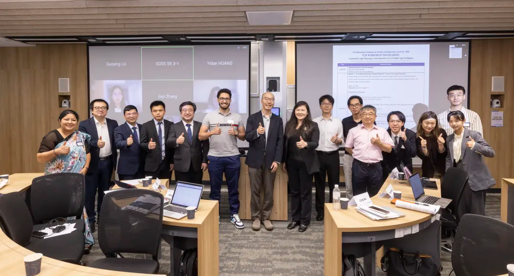

Trustworthy Legal Reasoning Workshop at ICAIL 2026
Organised by Professor Sirui Han’s team at HKUST, the Trustworthy Legal Reasoning Workshop brought together legal and AI researchers at Singapore Management University. Twelve presentations across three sessions examined evaluation, professional practice, rights protection and accountability in legal AI.